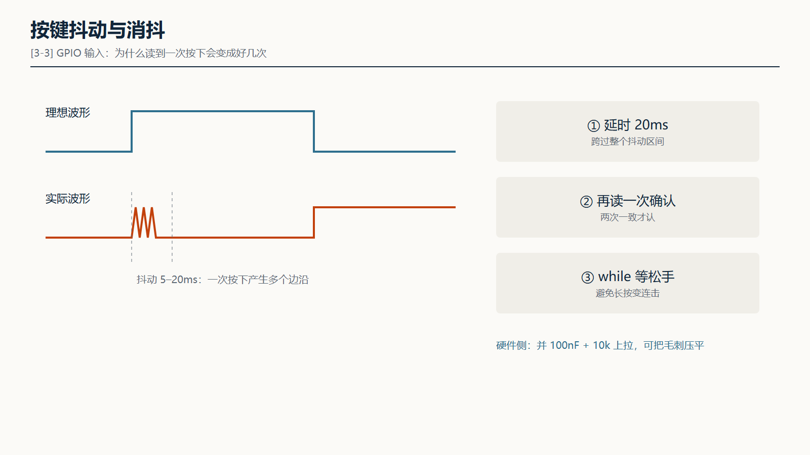

课程时长：约 44 分钟 | 深度版 | 配套结构图与看图理解
第一次“读”世界。输入模式、按键电路、消抖、模块封装，这一节把 C 语言的控制流和硬件电平第一次真正接上。
难点不在读引脚，而在“读到的东西不可靠”：机械抖动、浮空漂移、长线干扰，都必须在这里解决，否则后面所有按键交互都会带 bug。
按电路选择上拉/下拉/浮空输入
写出带消抖的按键扫描函数
解释 while 等待松手的作用
把按键封装成 Key.c/h

图 4 按键上拉电路与机械抖动波形：一次按下会产生多个边沿
上半是理想波形：按下立刻变低、松开立刻变高。下半是真实波形：按下瞬间在高低之间弹跳 5–20ms，产生一串边沿。
右侧三步就是软件消抖：延时跨过抖动区、再读一次确认、用 while 等松手。记住这条因果链——抖动是机械触点的物理属性，不是代码 bug，所以必须用时间或滤波去跨过它。
| 外部电路 | 应配模式 | 原因 |
|---|---|---|
| 按键接 GND | 上拉输入 | 未按时为高，按下为低 |
| 按键接 VCC | 下拉输入 | 未按时为低，按下为高 |
| 外部已有上拉/推挽驱动 | 浮空输入 | 避免内部分压影响电平 |
| 接 ADC | 模拟输入 | 数字部分必须断开 |
读单个引脚用 GPIO_ReadInputDataBit，返回 0/1；读整个端口用 GPIO_ReadInputData，返回 16 位。底层读的都是 IDR。
uint8_t v1 = GPIO_ReadInputDataBit(GPIOB, GPIO_Pin_1); /* 单脚 */ uint16_t v2 = GPIO_ReadInputData(GPIOB); /* 整个端口 */
检测到变化 → 延时 20ms → 再读一次，仍相同才确认；松手时用 while 等待恢复，避免长按被当成连击。
uint8_t Key_GetNum(void)
{
uint8_t KeyNum = 0;
if (GPIO_ReadInputDataBit(GPIOB, GPIO_Pin_1) == 0)
{
Delay_ms(20);
while (GPIO_ReadInputDataBit(GPIOB, GPIO_Pin_1) == 0);
Delay_ms(20);
KeyNum = 1;
}
return KeyNum;
}
模块同时提供 AO 与 DO：AO 是分压后的模拟电压，接 ADC 才知道“多亮”；DO 是板载比较器输出，只回答“过没过阈值”，阈值由蓝色电位器调。
DO 通常是开漏输出，模块自带 10kΩ 上拉。单片机端配上拉或浮空都行，配下拉会与外部上拉形成分压，导致电平不确定。
| 阻值 | 按下电流 | 适用 |
|---|---|---|
| 4.7kΩ | 约 0.7mA | 抗干扰强，I2C 常用 |
| 10kΩ | 约 0.33mA | 按键常用，折中 |
| 100kΩ | 约 33µA | 极省电，但易受干扰 |
为什么抖动是 5–20ms：机械触点的弹跳由簧片质量与弹力决定，属于物理属性。软件延时取 20ms 是为了覆盖最坏情况，代价是响应变慢 20ms。
上拉电阻是“抗扰”与“功耗”的折中：阻值小，抗干扰强但按下电流大；阻值大，省电但易受噪声影响。10kΩ 是通用折中值。
例：10kΩ 上拉、3.3V，按下时电流 = 3.3/10k = 0.33mA，功耗 1.1mW；换成 100kΩ 后电流 33µA，但长导线上的干扰更容易把电平拉翻。
若用内部上拉（约 40kΩ），电流 82µA，短距离够用；长线或强干扰必须外部 4.7k。
| 错误写法 | 后果 | 正确做法 |
|---|---|---|
| 按键配浮空输入 | 读数随机跳变 | 改上拉/下拉 |
| 只延时不做二次确认 | 偶发误触发 | 延时后再读一次 |
| 不等松手 | 长按变连击 | while 等待电平恢复 |
| 下拉输入接上拉按键 | 分压出中间电平 | 模式与电路匹配 |
抖动的物理来源：机械触点在闭合瞬间会弹跳多次，每次接触/断开都产生一个边沿。持续时间与触点材质、按压力度有关，典型 5–20ms，所以消抖延时取 20ms 是覆盖最坏情况。
为什么必须 while 等松手：主循环每一轮都会调用 Key_GetNum，若不等松手，按住期间每轮都返回“按下”，表现就是连击。等待松手把“一次按下”变成“一个事件”。
逻辑分析仪抓按键波形，数一次按下产生几个边沿
串口打印按键计数，对比加消抖前后的差异
把延时从 20ms 改成 1ms，观察误触发是否变多
| 现象 | 原因 | 解决 |
|---|---|---|
| 读数乱跳 | 配了浮空输入 | 改上拉或加外部电阻 |
| 按一次触发多次 | 没有消抖 | 加 20ms 二次确认 |
| 长按变连击 | 没有等待松手 | 加 while 等待 |
| 光敏 DO 不变 | 阈值调到头或接错引脚 | 转电位器，核对丝印 |
Q1. 上拉输入悬空为什么读到高？
A：引脚经内部电阻接 VDD，无电流则无压降，电位等于 VDD。
Q2. 消抖为什么是 20ms？
A：机械抖动持续 5–20ms。
Q3. while(...)；结尾分号的作用？
A：循环体为空，原地等待条件变化。
Q4. 浮空输入为什么不能接按键？
A：没有确定电平，读数随机。
Q5. DO 与 AO 的区别？
A：DO 是二值化结果，AO 是连续模拟量。
Q6. 内部上拉为什么不能驱动负载？
A：30–50kΩ 只能提供几十 µA。
Q7. 内部上拉阻值大概多少？
A：F103 约 30–50kΩ。
Q8. 硬件消抖与软件消抖怎么配合？
A：RC 滤高频毛刺，软件 20ms 兜底。
1. 按键接 GND 应配什么模式？
答：上拉输入。
2. 消抖的三步是什么？
答：延时、复读、等松手。
3. IDR 里存的是什么？
答：引脚当前电平。
4. 光敏 DO 输出低说明什么？
答：超过设定阈值（取决于比较器接法）。
☐ 会按电路选模式
☐ 能默写消抖代码
☐ 理解 while 等待
☐ 分清 DO/AO